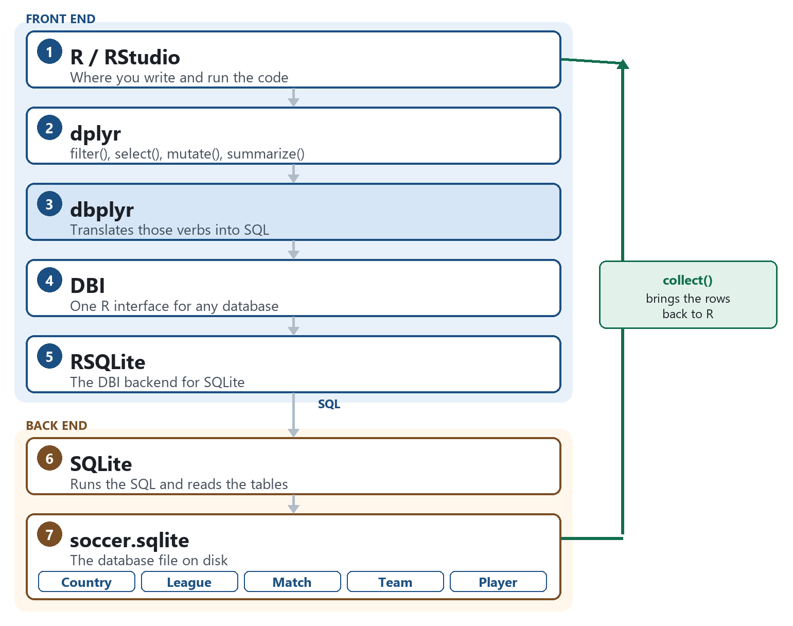
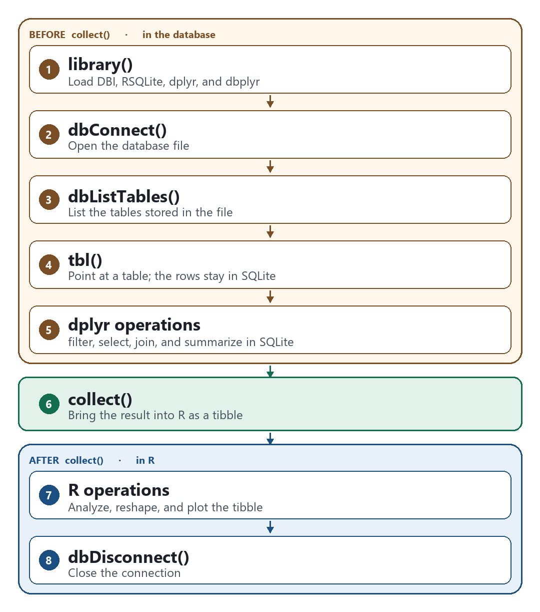

8.3 dbplyr: Databases
1. What is a database?
A database is an organized collection of data designed for efficient storage, retrieval, and management.
In R, analysis usually begins with a data frame stored in RAM. That representation is appropriate for a table such as flights. When the data are very large, when several users query them concurrently, or when they already reside in an external database, loading the entire collection into R may be inefficient or impossible.
A relational database organizes data into multiple tables that are connected by common identifiers (keys). A soccer database, for example, may contain the following tables.
| Table | Information |
|---|---|
| Country | Country names and identifiers |
| League | Soccer leagues |
| Match | Match results, dates, and scores |
| Team | Team names and identifiers |
| Player | Player information |
Unlike an ordinary data frame, these tables are stored together and can be queried without loading the entire database into memory.
2. What is SQLite?
SQLite is a lightweight relational database management system (DBMS).
soccer.sqliteis a database file that contains the soccer data.- SQLite is the software that reads, manages, and queries that file.
- A single
.sqlitefile can contain multiple tables, indexes, and other database objects.
Other database management systems include MySQL, MariaDB, PostgreSQL, Microsoft SQL Server, and Google BigQuery. The relational model is shared; the software that manages the data differs.
3. Understanding the R packages
Each component in the workflow has a distinct role.
| Component | Role |
|---|---|
| R / RStudio | The environment in which R code is written and executed |
| dplyr | Provides filter(), select(), mutate(), and related verbs |
| dbplyr | Translates dplyr operations into SQL |
| SQL | The language used to query a relational database |
| DBI | Defines a standard interface between R and database systems |
| RSQLite | Implements the DBI interface for SQLite |
| SQLite | Executes SQL and manages the stored data |
| soccer.sqlite | The file that contains the database |
dbplyr, DBI, and RSQLite are not attached by library(tidyverse). They must be installed and loaded explicitly.
SQL is the language generated by dbplyr and executed by SQLite. It is not a separate software layer. DBI and RSQLite together establish the connection and submit the query.
Other packages that implement database connections include RMariaDB, RPostgres, odbc, and bigrquery. They allow R to communicate with other database systems. DBI remains the common interface, and dbplyr can still translate the dplyr code. Only the backend package changes.
4. From the front end to the back end
The figure orders the components from the code written in R to the file on disk. The downward arrows are the query. The green path is the return of the result.

The front end is the R session. The back end is the database engine and the file stored on disk.
- R / RStudio. The environment in which the analysis is written and executed.
- dplyr. Specifies the manipulation through
filter(),select(),group_by(), andsummarize(). - dbplyr. Translates those dplyr operations into SQL. dplyr does not communicate with the database file directly.
- DBI. Provides a standard set of functions for connecting, listing tables, and submitting queries. The same calls apply to SQLite and to other database systems.
- RSQLite. The SQLite implementation of DBI. It opens the
.sqlitefile. - SQLite. Executes the SQL and processes the records.
- soccer.sqlite. The physical database file.
Match,Team,Player,League, andCountryare stored in that file, not in R's memory.
collect() is the return path. SQLite has performed the computation. Only the requested rows are transferred into R.
5. Example: working with the soccer database
The database file in this example is ./data/soccer/soccer.sqlite, relative to the project directory.
The pipe |> passes the current table into the next function. The same pipelines are often written with %>%.
Step 1. Load the required packages.
library(DBI)
library(RSQLite)
library(dplyr)
library(dbplyr)
Step 2. Connect to the database. dbConnect() opens the file. The object con is the connection, not a data frame.
con <- dbConnect(
SQLite(),
dbname = "./data/soccer/soccer.sqlite"
)
Step 3. Identify the available tables.
dbListTables(con)
Step 4. Create a reference to the Match table. tbl() does not download Match. Match_db is a lazy reference: a description of a query, not a data frame in RAM.
Match_db <- tbl(con, "Match")
Step 5. Manipulate the table with dplyr. The verbs are recorded. SQLite has not yet executed them.
result <- Match_db |>
filter(season == "2010/2011") |>
select(date, home_team_goal, away_team_goal)
Step 6. Examine the SQL translation. show_query() prints the SQL that dbplyr will submit.
show_query(result)
The generated SQL has this form:
SELECT date, home_team_goal, away_team_goal
FROM Match
WHERE season = '2010/2011'
Step 7. Retrieve the result into R. collect() executes the query and returns a tibble.
matches <- result |>
collect()
matches is then a local tibble stored in R's memory. Match_db and result remain query descriptions.
Step 8. Close the connection.
dbDisconnect(con)
The connection should be closed explicitly. Otherwise R closes it when the session ends, and a file-backed database may remain locked until then.
The same sequence applies when soccer.sqlite is not available. dbConnect(SQLite(), ":memory:") creates a database that exists only for the current session, and copy_to() writes a local data frame, such as nycflights13::flights, into that database. tbl(), the dplyr verbs, show_query(), and collect() are unchanged.
6. The sequence
Many dplyr verbs belong before collect(). That is one of the main advantages of dbplyr.

Steps 1–5 build a query and leave the rows in SQLite. collect() copies the result into R. Steps 7 and 8 use that tibble and then close the connection.
1. library(). Load DBI, RSQLite, dplyr, and dbplyr.
2. dbConnect(). Open soccer.sqlite. The object con is the connection.
3. dbListTables(). List the tables in the file, such as Match, Team, and Country.
4. tbl(). Point at a table. Match_db describes a query, and the rows stay in SQLite.
5. dplyr operations. filter(), select(), mutate(), arrange(), group_by(), summarize(), and the join functions are translated into SQL by dbplyr. SQLite evaluates them when the query runs. show_query() prints that SQL and leaves the rows in the database.
6. collect(). Execute the query. Only the requested rows return, as a tibble in R's memory.
7. R operations. Plots, pivot_longer(), separate(), and any other function without an SQL translation run on that tibble.
8. dbDisconnect(). Close the connection when the query is finished. A file-backed database can remain locked until then.
Filter and summarize a large table before collect(), so only the needed rows enter R. After collect(), the full set of applicable R functions is available, including operations that cannot be translated into SQL.
7. Why collect() is required
Before collect(). The query remains associated with the database. Supported operations are executed by SQLite when the query runs. Printing a lazy table displays a preview, commonly the first rows, rather than the full table.
After collect(). The selected rows form a tibble in RAM. Subsequent operations run locally in R. ggplot2 requires a local data frame, so a plot is constructed only after collect().
Not every tidyverse verb has an SQL translation. pivot_longer(), separate(), and most tidyr operations require a local data frame. filter(), select(), mutate(), arrange(), group_by(), summarize(), and the join functions generally translate.
The purpose of dbplyr is to filter, join, and summarize large tables inside the database, and to transfer only the required result.
8. Key takeaway
The path of a query is:
R, then dplyr, then dbplyr, then DBI and RSQLite, then SQLite, then soccer.sqlite.
- R is the environment in which the analysis is conducted.
- dplyr expresses the data manipulation.
- dbplyr converts that manipulation into SQL.
- DBI and RSQLite provide the connection and submit the query.
- SQLite performs the computation.
soccer.sqlitestores the data.collect()returns the result to R.
The analyst writes ordinary dplyr code and does not load the entire database into memory.
9. Practice
- Name the seven components from R to
soccer.sqlite. Which component is a language rather than a program? - Connect to
soccer.sqlite. FromMatch, retain the 2010/2011 season and the columnsdate,home_team_goal, andaway_team_goal. Callshow_query(), thencollect(). State howmatchesdiffers fromMatch_db. - Disconnect. If
soccer.sqliteis not in the project, repeat the procedure withnycflights13::flightscopied into an in-memory SQLite database, and restrict the rows tomonth == 1.